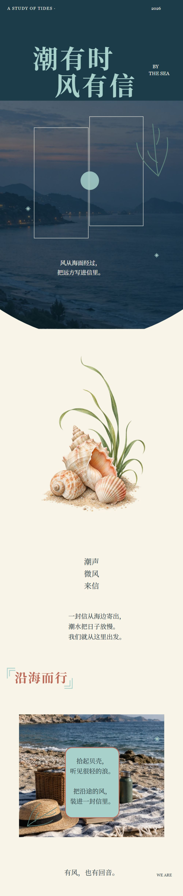
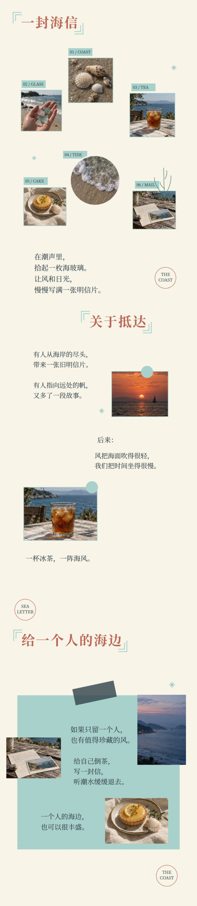
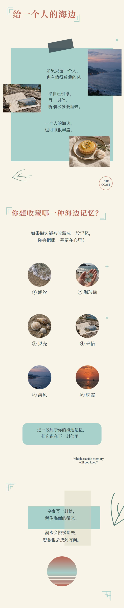
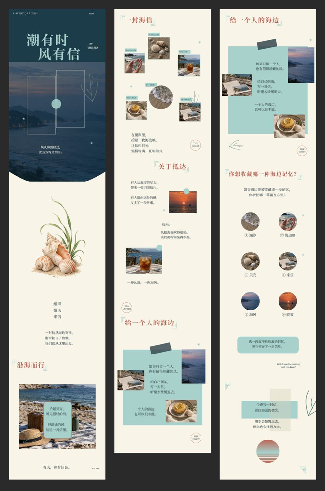

← 返回编辑设计
海边来信 移动端长图与内容视觉设计
以「潮有时，风有信」为线索，将海景摄影、贝壳素材、旅行片段与短文案组织成三张连续的移动端长图。深海蓝、雾白和浅海青构成安静的海岸氛围，并通过留白、拼贴和互动选择建立如信件般舒缓的滚动阅读体验。
以「潮有时，风有信」为线索，将海景摄影、贝壳素材、旅行片段与短文案组织成三张连续的移动端长图。深海蓝、雾白和浅海青构成安静的海岸氛围，并通过留白、拼贴和互动选择建立如信件般舒缓的滚动阅读体验。



